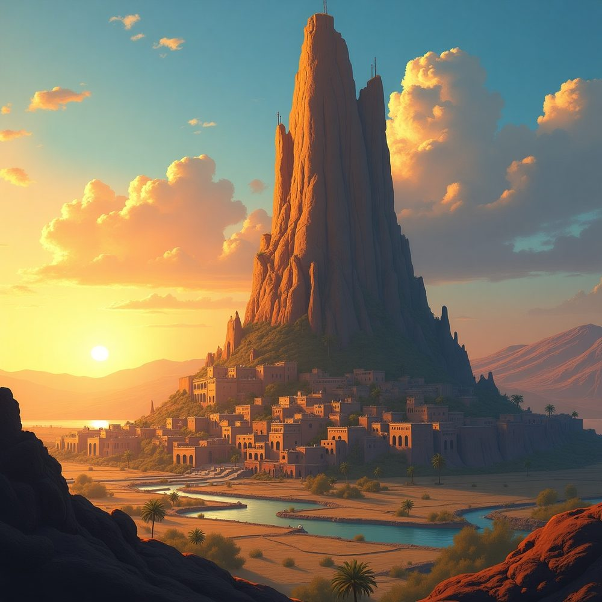

Regions of Moonrise
Moonrise is divided into a number of distinct regions, each with its own character, climate, and political alignment.
Major Regions
The Lakelands
The Lakelands occupy the interior around the great lakes. Once ruled by the Bleeding King, they are now the territory of The Three. The region is culturally rich, with Indian-influenced cuisine, Khmer/Thai architecture, and a tradition of tango-style dance. Coffee and coca are the characteristic stimulants. The Lakelands export spices, coffee, ivory, and pearls.
The Central Valley
The Central Valley runs through the heart of the continent, divided into upper and lower regions. The Lower Central Valley exports wool, mercury, and jade. The Upper Central Valley is known for its marble. The valley was the heartland of the Arcane Order and has a Welsh-influenced culture among its human population.
The Dreaming Coast
A Mediterranean-style coastal region within The League. Known for opera, chariot racing, and wine. The Dreaming Coast has a Chinese-influenced cuisine, Indian architecture, and Elizabethan dress. Exports include salt, dyes, and citrus.
The Godspire Mountains
The great mountain range that is the heartland of the Gold Dwarves and The Combine. Rich in mineral wealth — the region exports gold, iron, gypsum, and coal.
The Old Dominion Territories
The river valley homeland of the Old Dominion. Characterised by Gothic architecture, Puritan dress, sculpture, and bullfighting. The culture favours beer and opium, with Eastern European cuisine. Exports include silk, sulphur, and diamonds.
The Scalewind Isles
An archipelago home to the Silver Dwarves and many Dragons. The western isles are guarded by the red dragon Blazejaw, who roosts on the volcano of Mount Salamander. A sea-cavern on the southern coast is the lair of a medusa, and the rocks around its mouth are studded with the petrified figures of those who came too close. The dragonborn haven of Seahaven is located here. The isles export silver, fur, amber, and whale products.
The Half-Moon Forest
The great forested domain of the wood elves. Exports tea and cocoa. See Forest Kingdoms for details.
The Bay of Song
A coastal region with a Scottish-flavoured human culture. Many Orcs live here, both free and enslaved. The region exports sugar, tobacco, cotton, and tin.
The Rockfire Desert
A vast desert home to the Sand Halflings and the dragonborn haven of Dryhaven. Exports salt, gold, and incense.

The Sea of Grass
Once the homeland of the Grass Halflings, now largely depopulated after the Giant invasion ~200 years ago.
The Blightlands
A mysterious and inhospitable region. Possibly the location of Emeraldhold, the lost dwarven hold now controlled by mind flayers.
The Jagged Shore
A rugged coastal region known for timber exports and piracy.
Icewyrm
A frozen southern region beneath which lies Sapphirehold, the lost-but-thriving dwarven city cut off by hostile climate and dragons.
The Broken Teeth
A mountainous region along the eastern frontier, through which the giants originally migrated into Moonrise.
Notable Cities
- Mistdam — earthmote port city in the League
- Neath — city under a great shell, seat of the League Diet
- Vermillion and Azure — rival port cities on the Isthmus
- Torrent’s Pass — waterfall city built into a cliff face
- Arrowmoor — an independent duchy, starting location of the campaign
- The Cloud-Capital — the fallen flying city of the Arcane Order
See also
- History of Moonrise — how these regions came to be
- The League — the political alliance connecting many of these regions